4. Digital Modulation¶
In this chapter we are going to discuss actually transmitting data! We will design signals that convey “information”, i.e. 1’s and 0’s. The main goal of modulation is to squeeze as much data into the least amount of spectrum possible. Technically speaking we want to maximize “spectral efficiency”, in units bits/sec/Hz. Transmitting 1’s and 0’s faster will increase the bandwidth of our signal (recall Fourier properties), which means more spectrum is used, so we will also look at other techniques besides just transmitting faster. Because of this, there will be a lot of trade-offs, but there will also be room for creativity.
Symbols¶
New term alert! Our transmit signal is going to be made up of “symbols”. Each symbol will carry some number of bits of information, and we will transmit symbols back-to-back, thousands or even millions in a row.
As a simplified example, let’s say we have a wire and are sending 1’s and 0’s using high and low voltage levels. A symbol is one of those 1’s or 0’s:
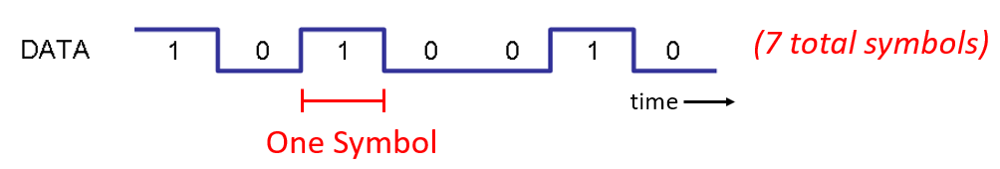{kind=link}
In the above example each symbol represents one bit. How can we convey more than one bit per symbol? Let’s look at the signals that travel down Ethernet cables, which is defined in an IEEE standard called IEEE 802.3 1000BASE-T. The common operating mode of ethernet uses a 4-level amplitude modulation (2 bits per symbol) with 8 ns symbols.
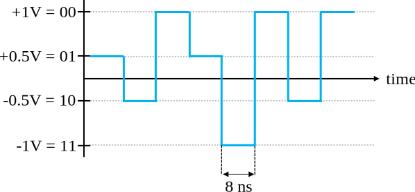Take a moment to try to answer these questions:
- How many bits per second are transmitted in the example shown below?
- How many pairs of these data wires would be needed to transmit 1 gigabit/sec?
- If a modulation scheme had 16 different levels, how many bits per symbol is that?
- With 16 different levels and 8 ns symbols, how many bits per second is that?
Answers
- 250 Mbps - (1/8e-9)*2
- Four (which is what ethernet cables have)
- 4 bits per symbol - log_2(16)
- 0.5 Gbps - (1/8e-9)*4
Wireless Symbols¶
Question- Why can’t we directly transmit the ethernet signal shown in the figure above? There are many reasons, the biggest two being:
- Low frequencies require huge antennas
- Square waves take an excessive amount of spectrum for the bits per second, recall from the Frequency Domain chapter that sharp changes in time domain use a large amount of bandwidth/spectrum:

What we do for wireless signals is start with a carrier, which is just a sinusoid. E.g. FM radio uses a carrier like 101.1 MHz or 100.3 MHz. We modulate that carrier in some way (there are many ways). For FM radio it’s an analog modulation, not digital, but it’s the same concept as digital modulation.
In what ways can we modulation the carrier? Well what are the different properties of a sinusoid?
- Amplitude
- Phase
- Frequency
We can modulate our data onto a carrier by modifying any one (or more) of these three.
Amplitude Shift Keying (ASK)¶
Amplitude Shift Keying (ASK) is the first digital modulation scheme we will discuss, because it’s the simplest to visualize of the three. We literally just modulate the amplitude of the carrier. Example of 2-level ASK, called 2-ASK:
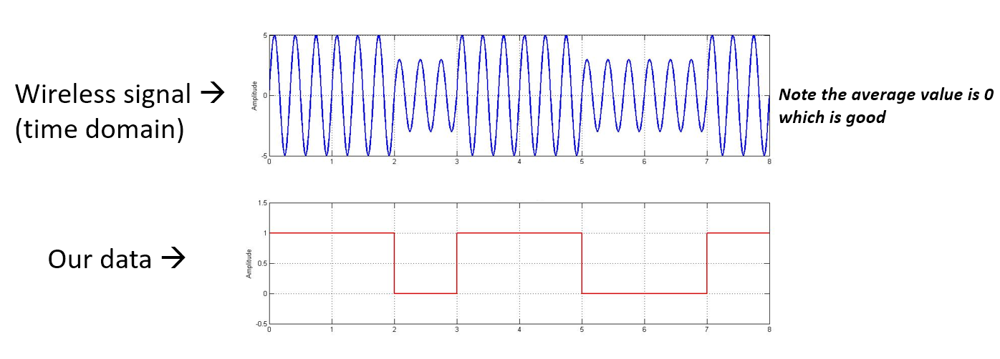{kind=link}
We can use more than two levels, allowing for more bits per symbol. Below shows an example of 4-ASK. In this case each symbol carries 2 bits of information.
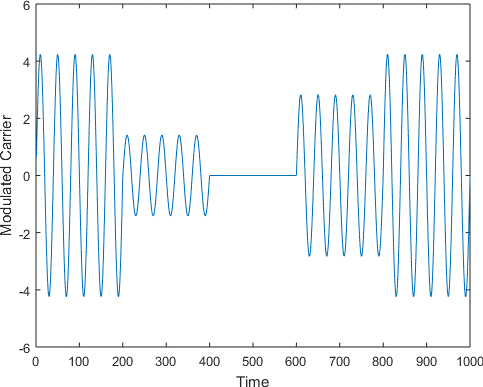{kind=link}
Question- How many symbols are shown in the signal snippet above? How many bits are represented total?
Answers
Five symbols, 10 bits of information
So how do we actually create this signal digitally, in code? All we really have to do is create a vector with N samples per symbol, then multiply that vector by a sinusoid. This modulates the signal onto a carrier (the sinusoid acts as that carrier).
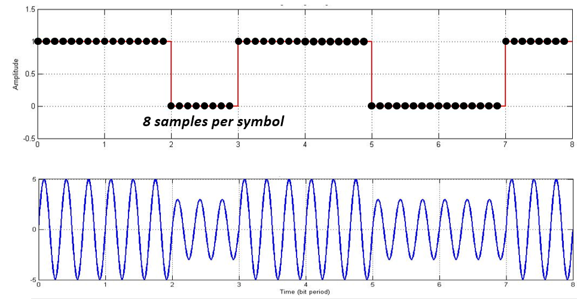{kind=link}
The top plot shows the discrete samples represented by dots, and then the bottom plot shows what the resulting signal looks like, which could be represented digitally or even transmitted over the air. In real systems, the frequency of the carrier is usually much much higher than the rate the symbols are changing. In this example there are only three cycles of the sinusoid in each symbol, but in practice there might be thousands, depending on how high in the spectrum the signal is being transmitted.
Phase Shift Keying (PSK)¶
Now lets look at modulating the phase in a similar manner as we did with the amplitude. The simplest form is Binary PSK, a.k.a. BPSK, where there are two levels of phase:
- No phase change
- 180 degree phase change
Example of BPSK (note the phase changes):

It’s not very fun to look at plots like this:

So instead we usually represent the phase in the complex plane.
IQ Plots/Constellations¶
You have seen IQ plots before in the complex numbers subsection of the IQ Sampling chapter, but now we will use them in a new and fun way. For a given symbol, we can show the amplitude and phase on an IQ plot. For the BPSK example we said we had phases of 0 and 180 degrees. Lets plot those two points on the IQ plot. We will assume a magnitude of 1, in practice it doesn’t really matter what magnitude you use, a higher value means a higher power signal, but you can also just increase the amplifier gain instead.
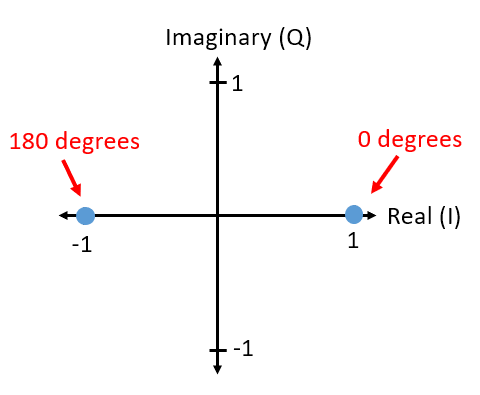{kind=link}
The above IQ plot shows what we will transmit, or rather the set of symbols we will transmit from. It does not show the carrier, so you can think about it as representing the symbols at baseband. When we show the set of possible symbols for a given modulation scheme, we call it the “constellation”. Many modulation schemes can be defined by their constellation.
To receive and decode BPSK we can use IQ sampling, like we learned about last chapter, and simply look at where the points end up on the IQ plot. However, there will be a random phase rotation due to the wireless channel, since the signal will have some random delay as it passes through the air between antennas. The random phase rotation can be reversed using various methods we will learn about later. Here is an example of a few different ways that BPSK signal might show up at the receiver (this does not include noise):

Back to PSK. What if we want four different levels of phase? I.e. 0, 90, 180, and 270 degrees. In this case it would be represented like so on the IQ plot, and it forms a modulation scheme we call Quadrature Phase Shift Keying (QPSK):

For PSK we always have N different phases, equally spaced around 360 degrees for best results. We often show the unit circle to emphasize that all points have the same magnitude:
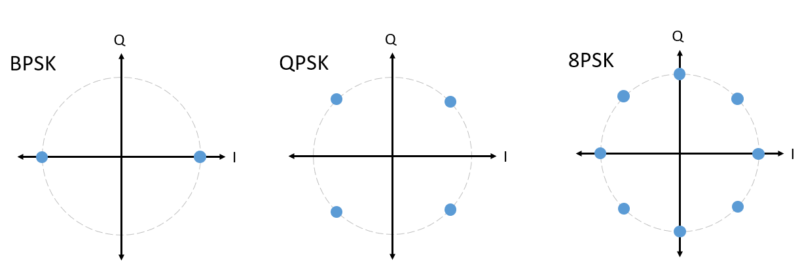{kind=link}
Question- What’s wrong with using a PSK scheme like this? Is this a valid PSK modulation scheme?
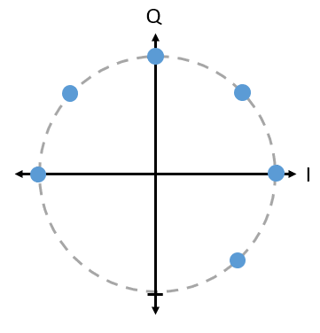{kind=link}
Answer
There is nothing invalid about this, you could certainly use it, but because the symbols are not uniformly spaced, it means this scheme is not as effective as it could be, something that will become clear once we talk about how noise impacts our symbols. The short answer is, we want to leave as much room as possible in between the symbols, in case there is noise, so that one symbol does not get interpreted at the receiver as one of the other (incorrect) symbols. We don’t want a 0 being received as a 1.
Let’s detour back to ASK for a moment. Note that we can show ASK on the IQ plot just like PSK. Here is the IQ plot of 2-ASK, 4-ASK, and 8-ASK:

As you may have noticed, 2-ASK and BPSK are the same thing. A 180 degree phase shift is the same as multiplying the sinusoid by -1. We call it BPSK, probably because PSK is used way more than ASK.
Quadrature Amplitude Modulation (QAM)¶
What if we combine ASK and PSK? We call this Quadrature Amplitude Modulation (QAM) and it usually looks something like this:
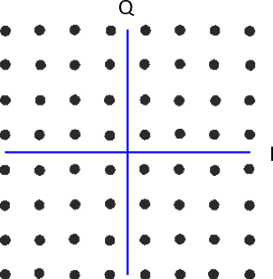{kind=link}
Here are some other examples of QAM:

For a QAM modulation scheme, we can technically put points wherever we want to on the IQ plot, since QAM means the phase and amplitude are being modulated. The “parameters” of a given QAM scheme are best defined by simply showing the QAM constellation. Alternatively, you could simply list the I and Q values for each point, like below for QPSK:

Back to the time domain for a second. Everything except the various ASK’s and BPSK are pretty hard to “see” in the time domain. To prove my point, here is an example of QAM in time domain, note how it’s tough to see the phase of each symbol:

This is why we usually use IQ plots, instead of showing the time domain signal. We might show the time domain signal if there’s a certain packet structure, or the sequence of symbols matters.
Frequency Shift Keying (FSK)¶
Last on the list is Frequency Shift Keying (FSK). FSK is fairly simple to understand, we just shift between N frequencies, each frequency is one possible symbol. However, because we are modulating a carrier, it’s really our carrier frequency +/- these N frequencies. E.g. we might be at a carrier of 1.2 GHz and shift between these four frequencies:
- 1.2005 GHz
- 1.2010 GHz
- 1.1995 GHz
- 1.1990 GHz
This would be 4-FSK, and there would be two bits per symbol. A 4-FSK signal in the frequency domain might look something like this:
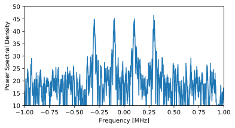If you are going to use FSK, there is one big question to ask: What should the spacing between frequencies be? We often denote this spacing as 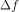, in Hz. We want to avoid overlap in the frequency domain, so must be large enough. The width of each carrier in frequency is a function of our symbol rate. More symbols per second means shorter symbols, which means wider bandwidth (recall the inverse relationship between time and frequency scaling). So the faster we transmit symbols, the wider each carrier will get, and the larger we have to make to avoid overlapping carriers. We won’t go into any more details about the design of FSK in this textbook.
IQ plots can’t be used to show different frequencies, they only show magnitude and phase. While it is possible to show FSK in the time domain, any more than 2 frequencies and it gets hard to see the difference between symbols:
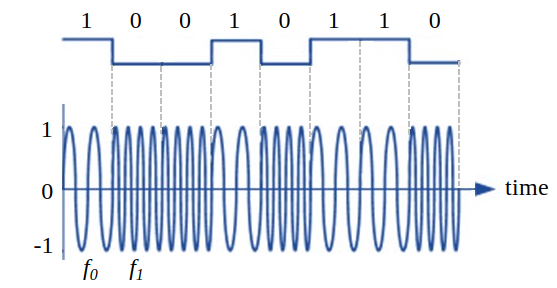As an aside, note that FM radio uses Frequency Modulation (FM) which is like an analog version of FSK. Instead of having discrete frequencies we jump between, FM radio uses a continuous audio signal to modulate the frequency of the carrier. Here is an example of FM and AM modulation, the “signal” at the top is the audio signal being modulated onto to the carrier.

In this textbook we are mainly concerned about digital forms of modulation.
Python Example¶
As a short Python example, let’s generate QPSK in Python, at baseband, and plot the constellation.
Even though we could generate the complex symbols directly, let’s start from the knowledge that QPSK has four symbols, at 90 degree intervals around the unit circle. We will use 45, 135, 225, and 315 degrees for our points. But first we will generate random numbers between 0 and 3, then do some math to get the degrees we want, then convert to radians because that’s what the sin() and cos() functions take.
import numpy as np
import matplotlib.pyplot as plt
num_symbols = 1000
x_int = np.random.randint(0, 4, num_symbols) # 0 to 3
x_degrees = x_int*360/4.0 + 45 # 45, 135, 225, 315 degrees
x_radians = x_degrees*np.pi/180.0 # np.exp() takes in radians
x_symbols = np.cos(x_radians) + 1j*np.sin(x_radians) # this produces our QPSK complex symbols
plt.plot(np.real(x_symbols), np.imag(x_symbols), '.')
plt.grid(True)
plt.show()
{kind=link}
Note how all the symbols we generated overlap, that’s because there’s no noise, so they are all the same value. Let’s add some noise:
n = (np.random.randn(num_symbols) + 1j*np.random.randn(num_symbols))/np.sqrt(2) # AWGN with unity power
noise_power = 0.01
r = x_symbols + n * np.sqrt(noise_power)
plt.plot(np.real(r), np.imag(r), '.')
plt.grid(True)
plt.show()
{kind=link}
Note how AWGN noise produces a uniform spread around each point in the constellation. If there’s too much noise then symbols start passing the boundary (the four quadrants) and will be interpreted by the receiver as an incorrect symbol. Try increasing noise_power until that happens.
We’re going to stop at this point. If we wanted to see what the QPSK signal looked like in the time domain, we would need to generate multiple samples per symbol (in this exercise we just did 1 sample per symbol), you will learn why once we discuss pulse shaping. The Python exercise in the Pulse Shaping chapter will continue where we left off here.